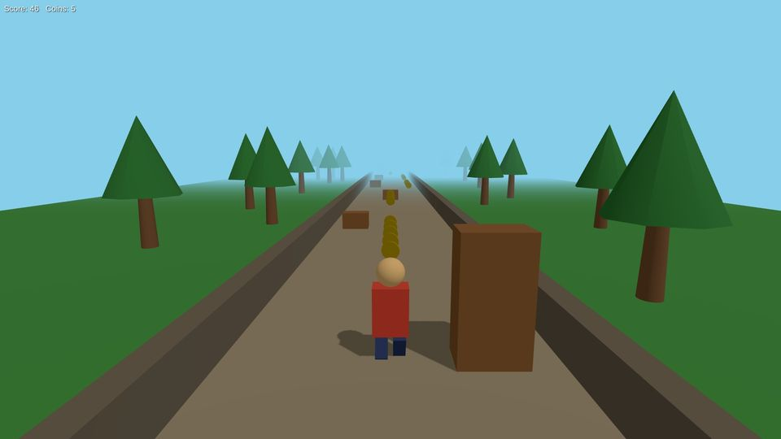
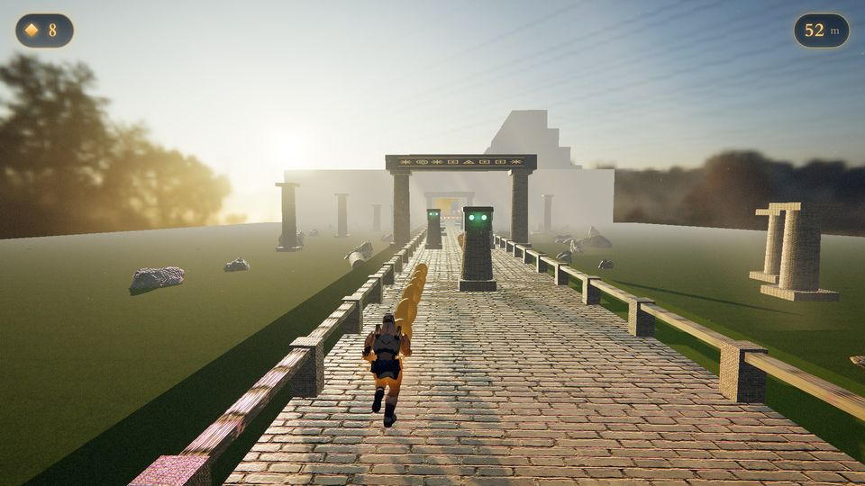

Claude alone
Without the plugin
What came back from the prompt alone: one file, flat colors, a box with legs.
Play this versionOne prompt, given to Claude twice. Once on its own, once with a plan, a review and a cold check (the Army plugin). Same rules, same three lanes. Play both and decide.

What came back from the prompt alone: one file, flat colors, a box with legs.
Play this version
A real sunrise sky lighting the scene, a human runner, and a road that dives into a hall of fire. Loads its art from the web, so give it a few seconds.
Play this version← → change lane · ↑ jump · ↓ slide · on a phone: swipe
"Build a Temple Run style endless runner that plays in the browser. Three lanes, jump, slide, coins, obstacles, speed that keeps rising. Focus on the graphics: make it look amazing."